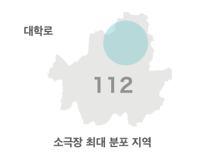
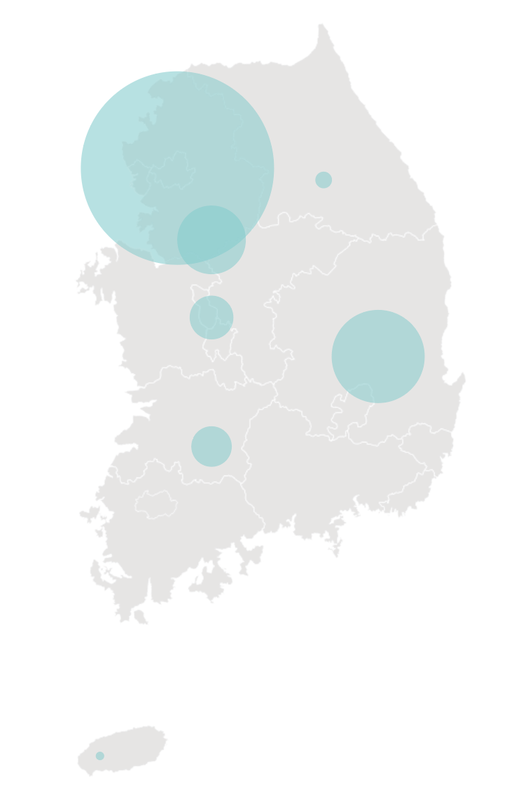

1
연극 뮤지컬 예매율
데이터를 살펴보았을 때, 비슷한 공연 장르인 연극과 뮤지컬의
예매율 점유율이 점점 큰 차이를 보이고 있다. 뮤지컬은 빠르게
성장하고 있지만, 연극의 경우 미미하다.
2
전국 연극 소극장 개수
연극 소극장의 분포가 고르지 않으며,
특히 서울 안 대학로에 밀집되어있는 모습을 볼 수 있다.


591
209
133
283
123
50
25
서울
경기
충청
경상
전라
강원
제주
3
공연 예술 산업 장르별
상연횟수&매출액 비교
연극의 높은 상연횟수에 비해 매출액이 다른 장르의
컨텐츠보다 떨어진다는 사실을 알 수 있다.
매출액
상연횟수
4
관람객 연령대별 매출액
관람객 연령대별 매출액을 통해 가장 지출이 많은 2~30대가
주로 예매하는 장르가 뮤지컬과 콘서트라는 점을 알 수 있다.